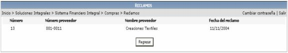
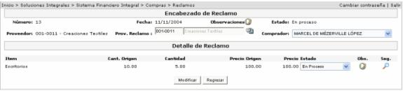
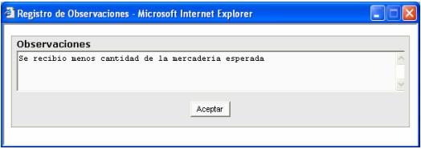
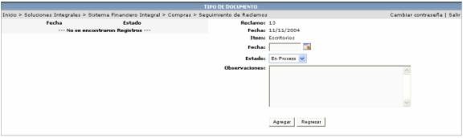

En este proceso se muestran los registros generados desde la recepción o devolución de documentos:

Aquí el usuario podrá ver la información del reclamo y darle el debido seguimiento:

Estado: es el estado en que se encuentra dicho reclamo. Puede ser, En Proceso, Producto Entregado, Nota Crédito, Nota Débito, Pagado, Anulado.
 Haciendo
un click sobre este icono, se desplegará una ventana para que el usuario
anote sus observaciones o comentarios del reclamo.
Haciendo
un click sobre este icono, se desplegará una ventana para que el usuario
anote sus observaciones o comentarios del reclamo.

El usuario podrá darle el debido seguimiento al reclamo, creando registros con los comentarios o los resultados que se van dando durante el seguimiento.

Fecha: fecha en que se crea el nuevo registro de resultados.
Estado: es el estado en que se encuentra dicho reclamo (En Proceso / Concluido)
Observaciones: campo para escribir el detalle del registro.